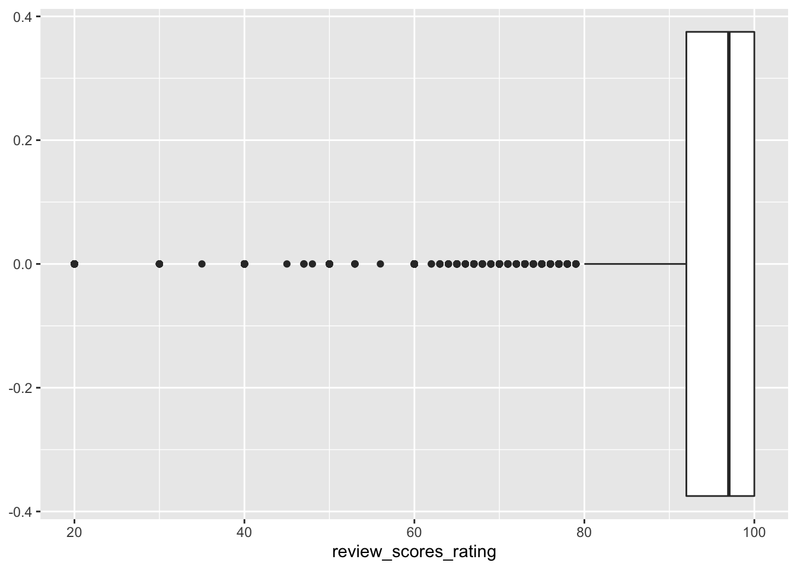
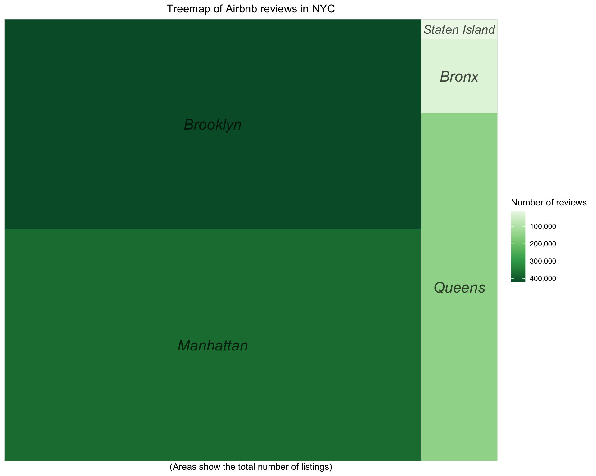

Chapter 3 Data transformation
3.1 The Columns We Chose From Listings.csv
After we downloaded the CSV file, we processed it first directly in excel as it is a great way to look for every column we had. We chose to keep: id,host_id,host_since,host_response_rate,host_acceptance_rate, host_listings_count, host_has_profile_pic, host_identity_verified, neighbourhood_group, latitude, longitude, room_type, accommodates, price, availability_30, availability_365, number_of_reviews, last_review, review_scores_rating, review_scores_accuracy, review_scores_cleanliness, review_scores_checkin, review_scores_communication, review_scores_location, review_scores_value, and reviews_per_month as these variables might be meaningful for our further analysis.
The brief understanding of the data is that there are 44187 Airbnb properties collected in this dataset and 26 features that we chose can be grouped into three feature groups: property information, host information, review information
Property information (10 features): id, host_since, neighbourhood_group, latitude, longitude, room_type, accomodates, price, availability_30, availability_365.
Host information (6 features): host_id, host_response_rate, host_acceptance_rate, host_listings_count, host_has_profile_pic, host_identity_verified.
Review information (10 features): number_of_review, last_review, review_scores_rating, review_scores_accuracy, review_scores_cleanliness, review_scores_checkin, review_scores_communication, review_scores_location, review_scores_value, review_per_month.
3.2 The year_bar Dataset
For the year_bar.csv file, we transform the hosts’ data from the host_since column in order to see how Airbnb’s hosting members grow over the years. We grouped the data by different boroughs then pivot the dataset wider so we have data filtered out for every year since 2008.
Let’s see the whole picture of the dataset:
## # A tibble: 13 x 7
## year Bronx Brooklyn Manhattan Queens Staten_Island Total
## <dbl> <dbl> <dbl> <dbl> <dbl> <dbl> <dbl>
## 1 2008 0 15 7 2 0 24
## 2 2009 1 138 99 14 3 255
## 3 2010 25 427 320 43 4 819
## 4 2011 23 1215 895 111 10 2254
## 5 2012 40 1966 1658 262 20 3946
## 6 2013 58 2283 2290 352 13 4996
## 7 2014 108 2771 3001 599 27 6506
## 8 2015 100 2800 3211 745 33 6889
## 9 2016 158 2065 2596 758 52 5629
## 10 2017 187 1299 1489 768 46 3789
## 11 2018 180 1111 1335 710 45 3381
## 12 2019 197 1213 2073 768 43 4294
## 13 2020 72 433 606 265 12 13883.3 Data manipulation
To conduct further analysis and visualizations, we filtered the price variable into three levels “Expensive”, “Medium”, and “Budget”. We define any property that has a price higher or equal to $160 as an expensive Airbnb listing. The medium price level is from $65 to $159. The budget properties are those cheaper than $65. Meanwhile, we also separated the review_scores_rating variable into three levels, “Excellent”, “Poor”, and “Good”. The definition of an excellent property is that the listing received an overall score rating of 100. We defined the scores from 92 to 99 to be good review scores. Lastly, those properties that received a review rating of less than 92 are poor reviews. We separated three levels of these two variables according to their interquartile ranges.
Price:
## 25% 75%
## 65 160
Overall review scores:
## 25% 75%
## 92 100